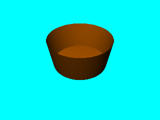
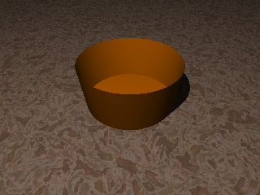

En POVRay il faut distinguer l' intérieur et l'extérieur d'un objet.
Avec POVRay on peut grouper et combiner des objets.
On pourra lire avec profit les remarques suivantes concernant la CSG.

Écrivez dans un fichier nommé cuve1.pov
le script permettant de créer cette image.
La scène est éclairée par une lumière ponctuelle blanche.
La paroi de la cuve est obtenue par l'intermédiaire d'un
cône creux. Les parois sont de couleur Orange. Le fond de la cuve est réalisé à l'aide d'un cylindre d'épaisseur très faible.

Modifiez votre script de manière à y rajouter le sol qui apparait sur cette nouvelle image. Le sol est un plan infini de texture T_Stone1 (cette texture est définie dans le fichier stones.inc).
L'utilisation d'un cône ouvert ne permet pas d'avoir une couleur différente entre l'intérieur et l'extérieur de la cuve. En utilisant la différence CSG de 2 cônes (l'un Orange, l'autre Silver, modifiez votre script de manière à obtenir la nouvelle image ci-contre.